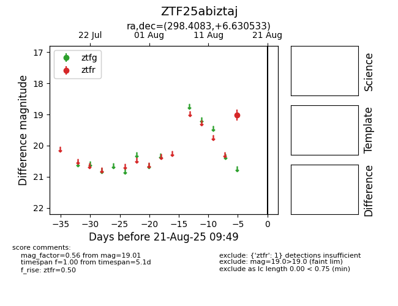

Target ZTF25abiztaj at 2025-08-21 09:49, see:
FINK: fink-portal.org/ZTF25abiztaj
Lasair: lasair-ztf.lsst.ac.uk/objects/ZTF25abiztaj
ALeRCE: alerce.online/object/ZTF25abiztaj
alt names
ZTF25abiztaj (ztf,alerce)
coordinates:
equatorial (ra, dec) = (298.4083,+6.63053)
galactic (l, b) = (46.1163,-10.62166)
photometry
last ztfr=19.01
1 ztfr detections
